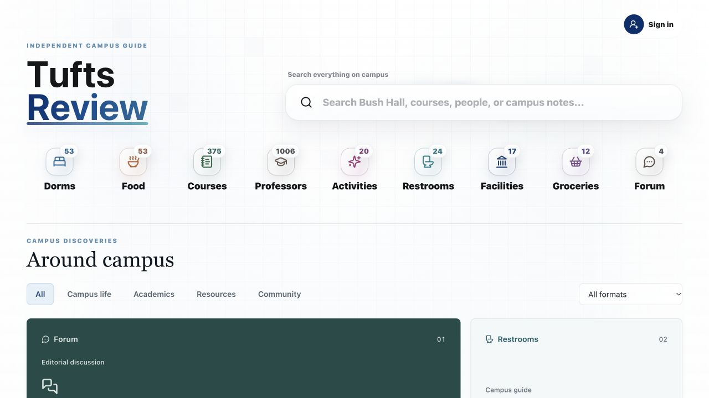

Tufts Review
A student guide to professors, courses, housing, and everyday campus resources.
- ROLE
- Co-founder; shared development
- TOOLS
- React · Next.js · Supabase
- CONTEXT
- Jan 2026–present

My contribution
I co-built the application with React, Next.js and Supabase. My work included department filters, pagination, and checking listings against official university sources.
The guide puts academic and everyday resources in one place. A student can start with a department or a category, then look at individual entries and their sources.
One design detail
A single star rating can hide several different meanings. The application distinguishes the source of a score rather than displaying every number as a Tufts Review community rating.
| Information available | What the interface should communicate |
|---|---|
| Platform-wide external rating | The named platform and its overall rating. |
| A selected set of external reviews | An average of that sample, distinct from the platform-wide score. |
| Reviews submitted to Tufts Review | The local community rating and its own review count. |
| No verified score | An empty state, rather than an invented average. |
This describes a choice in the shared codebase; it is not a claim of sole authorship of the rating implementation.
Explore the product
- Open the guide and choose Courses or Professors.
- Use the available search and department filters to narrow the list.
- Open an entry and check how its listing and rating sources are labeled.
The live site is the public entry point. The project source remains private; this page does not publish user reviews or analytics records.